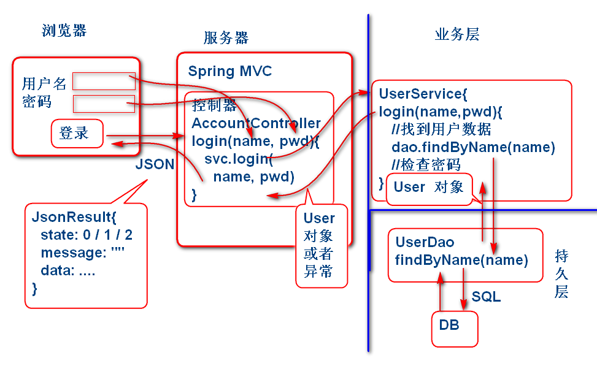

User.java
public class User implements Serializable{
private String id;
private String name;
private String password;
private String token;
private String nick;
public User() {
}
public User(String id, String name, String password, String token, String nick) {
super();
this.id = id;
this.name = name;
this.password = password;
this.token = token;
this.nick = nick;
}
public String getId() {
return id;
}
public void setId(String id) {
this.id = id;
}
public String getName() {
return name;
}
public void setName(String name) {
this.name = name;
}
public String getPassword() {
return password;
}
public void setPassword(String password) {
this.password = password;
}
public String getToken() {
return token;
}
public void setToken(String token) {
this.token = token;
}
public String getNick() {
return nick;
}
public void setNick(String nick) {
this.nick = nick;
}
@Override
public String toString() {
return "User [id=" + id + ", name=" + name + ", password=" + password + ", token=" + token + ", nick=" + nick
+ "]";
}
@Override
public int hashCode() {
final int prime = 31;
int result = 1;
result = prime * result + ((id == null) ? 0 : id.hashCode());
return result;
}
@Override
public boolean equals(Object obj) {
if (this == obj)
return true;
if (obj == null)
return false;
if (getClass() != obj.getClass())
return false;
User other = (User) obj;
if (id == null) {
if (other.id != null)
return false;
} else if (!id.equals(other.id))
return false;
return true;
}
}
注意: 有ID的实体类一般要实现 equals 和 hashCode 方法。
UserDao.java
package cn.tedu.note.dao;
import cn.tedu.note.entity.User;
public interface UserDao {
void saveUser(User user);
}
注意： 实体访问接口的包，要与spring-mybatis.xml中配置的mapper接口扫描位置要一致。
spring-mybatis.xml：
<!-- 配置Mapper接口扫描 -->
<bean id="mapperScanner" class="org.mybatis.spring.mapper.MapperScannerConfigurer">
<!-- 扫描cn.tedu.note.dao中的mapper接口 -->
<property name="basePackage" value="cn.tedu.note.dao" />
</bean>
添加Mapper映射xml文件实现访问接口：
mapper/UserMapper.xml:
<?xml version="1.0" encoding="UTF-8" ?>
<!DOCTYPE mapper PUBLIC "-//ibatis.apache.org//DTD Mapper 3.0//EN"
"http://ibatis.apache.org/dtd/ibatis-3-mapper.dtd">
<mapper namespace="cn.tedu.note.dao.UserDao">
<insert id="saveUser"
parameterType="cn.tedu.note.entity.User">
insert into cn_user
(cn_user_id,
cn_user_name,
cn_user_password,
cn_user_token,
cn_user_nick)
values
(#{id}, #{name}, #{password}, #{token}, #{nick})
</insert>
</mapper>
注意：UserMapper.xml 的存储位置要与spring-mybatis.xml 中配置对应
spring-mybatis.xml：
<!-- sessionFactory -->
<bean id="sqlSessionFactory" class="org.mybatis.spring.SqlSessionFactoryBean">
<property name="dataSource" ref="dataSource"/>
<!-- resource:/mapper/UserMapper.xml -->
<property name="mapperLocations" value="classpath:mapper/*.xml" />
</bean>
利用JUnit 测试：
public class TestCase {
ApplicationContext ctx;
@Before
public void init(){
ctx =
new ClassPathXmlApplicationContext(
"spring-mybatis.xml",
"spring-service.xml");
}
@Test //测试MyBatis配置
public void testMapperScanner(){
Object obj =
ctx.getBean("mapperScanner");
System.out.println(obj);
}
@Test//测试UserDAO的Save方法
public void testSaveUser(){
UserDao dao =
ctx.getBean(
"userDao", UserDao.class);
System.out.println(dao);
String id=UUID.randomUUID().toString();
System.out.println(id);
User user=new User(
id,"Tom","123","","Tomcat");
dao.saveUser(user);
}
}
逐个测试每个方法，测试结果到数据库中查询。
根据业务功能，映射到软件的架构中的各个层次，设计如下：

在UserDAO接口中添加findUserByName方法：
public interface UserDao {
void saveUser(User user);
User findUserById(String id);
User findUserByName(String name);
}
在MyBatis UserMapper.xml 文件中添加SQL语句：
<select id="findUserByName"
parameterType="string"
resultType="cn.tedu.note.entity.User">
select
cn_user_id as id,
cn_user_name as name,
cn_user_password as password,
cn_user_token as token,
cn_user_nick as nick
from
cn_user
where
cn_user_name=#{name}
</select>
在TestCase中添加测试案例，测试findUserByName方法
@Test
public void testFindUserByName(){
String name = "Tom";
UserDao dao = ctx.getBean( "userDao", UserDao.class);
User user=dao.findUserByName(name);
System.out.println(user);
}
添加业务层接口UserService.java：
public interface UserService extends Serializable{
/**
* 登录方法
* @param name 用户名
* @param password 密码
* @return 登录成功时候返回用户的信息
* @throws NameOrPasswrodException
* 用户名或密码错误
* 用户名或密码为空
*/
User login(String name,String password) throws NameOrPasswordException;
}
实现登录功能 UserServiceImpl：
@Service("userService")
public class UserServiceImpl implements UserService{
private static final long serialVersionUID = -2319034197248489962L;
@Autowired
private UserDao userDao;
public User login( String name, String password) throws NameOrPasswordException {
//入口参数检查
if(name==null || name.trim().isEmpty()){
throw new NameOrPasswordException("用户名不能为空");
}
if(password==null || password.trim().isEmpty()){
throw new NameOrPasswordException("密码不能为空");
}
//从业务层查询用户信息
User user=userDao.findUserByName(name);
if(user==null){
throw new NameOrPasswordException("用户名或者密码错误");
}
if(user.getPassword().equals(password)){
return user;//登录成功
}
throw new NameOrPasswordException("用户名或者密码错误");
}
}
更新Spring配置文件，扫描业务层组件 spring-service.xml:
<!-- spring-service.xml -->
<context:component-scan base-package="cn.tedu.note.service"/>
添加测试案例测试登录功能：
@Test
public void testLogin(){
String name="Tom";
String password = "123";
UserService service = ctx.getBean("userService", UserService.class);
User user = service.login(name, password);
System.out.println(user);
//异常的登录测试
user = service.login(name, "1234");
}
添加JsonResult类，用于封装Json返回值：
/**
* 用于封装服务器到客户端的Json返回值
*/
public class JsonResult<T>
implements Serializable{
public static final int SUCCESS=0;
public static final int ERROR=1;
private int state;
private String message = "";
private T data;
public JsonResult() {
state = SUCCESS;
}
//为了方便,重载n个构造器
public JsonResult(
int state, String message, T data) {
this.state = state;
this.message = message;
this.data = data;
}
public JsonResult(String error){
this(ERROR, error, null);
}
public JsonResult(T data){
this(SUCCESS, "", data);
}
public JsonResult(int state){
this(state, "", null);
}
public JsonResult(Throwable e){
this(ERROR, e.getMessage(), null);
}
public int getState() {
return state;
}
public void setState(int state) {
this.state = state;
}
public String getMessage() {
return message;
}
public void setMessage(String message) {
this.message = message;
}
public T getData() {
return data;
}
public void setData(T data) {
this.data = data;
}
@Override
public String toString() {
return "JsonResult [state=" + state + ", message=" + message + ", data=" + data + "]";
}
}
增加控制器用于处理Web请求： AccountController.java
@Controller
@RequestMapping("/account")
public class AccountController {
@Autowired
private UserService userService;
@RequestMapping("/login.do")
@ResponseBody
public JsonResult<User> login(
String name, String password){
try{
User user=userService.login(
name, password);
return new JsonResult<User>(user);
}catch(Exception e){
e.printStackTrace();
return new JsonResult<User>(e);
}
}
}
更新 spring-web.xml 配置文件增加如下内容：
<!-- spring-web.xml -->
<context:component-scan base-package="cn.tedu.note.web"/>
<mvc:annotation-driven/>
将项目部署在Tomcat服务器上测试：
访问：
http://localhost:8080/note/account/login.do?name=Tom&password=123
返回：
{"state":0,"message":"","data":{"id":"1","name":"Tom","password":"123","token":"","nick":"Tomcat"}}